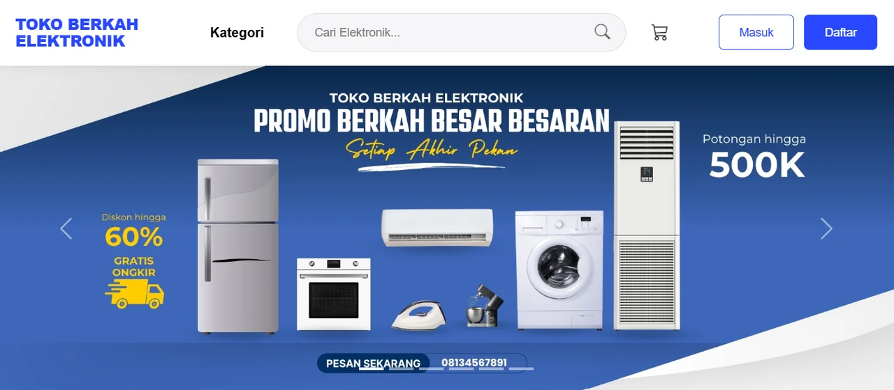

Tampilan beranda Toko Berkah Elektronik.
- 2025
- Laravel 11
- PHP
- MySQL
- Bootstrap
Latihan membangun aplikasi CRUD (Create, Read, Update, Delete) dengan Laravel 11 dan MySQL, mengikuti tutorial CRUD Laravel 11 dari ItSolutionStuff, dengan data berupa produk.
Fitur
- Daftar produk dengan pagination (5 data per halaman).
- Tambah produk, lihat detail, ubah, dan hapus.
- Pesan sukses setelah tiap aksi dan validasi form (nama dan detail wajib diisi).
Yang dipelajari
- Migration untuk membuat tabel products (nama, detail, timestamp) di MySQL.
- Model Eloquent dengan $fillable.
- Form Request (ProductStoreRequest dan ProductUpdateRequest) untuk validasi.
- Resource Controller dan Route::resource untuk tujuh rute standar CRUD.
- Template Blade dengan layout bersama, plus Bootstrap 5 dan Font Awesome lewat CDN.
Menjalankan
composer install copy .env.example .env php artisan key:generate php artisan migrate php artisan serve
Atur koneksi MySQL di file .env lebih dulu. Laravel 11 membutuhkan PHP 8.2 atau lebih baru.